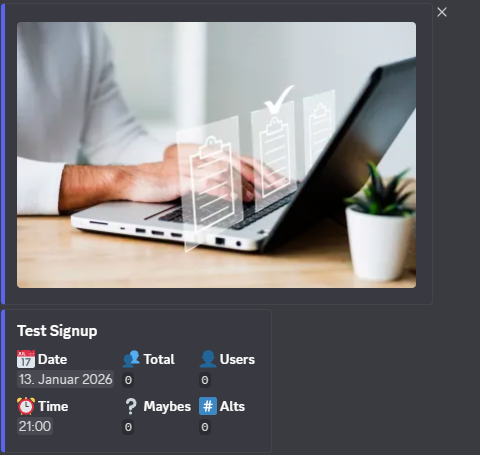
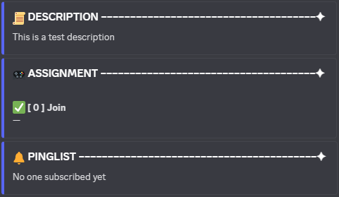
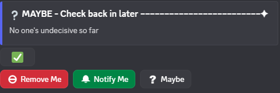

Discord ist eine beliebte Plattform für Communities mit Text-, Sprach- und Video-Chats. Mein Bot automatisiert Aufgaben auf Discord-Servern, erleichtert die auf MMOs ausgelegte Event-Organisation und unterstützt mehrsprachige Kommunikation, sodass Community-Manager Zeit sparen und den Überblick behalten.
Signup im Einsatz
So sieht die Anmeldung für ein Event direkt auf dem Discord-Server aus:



Kernfunktionen
Mein Bot vereint vier Bots in einem: Event-Anmeldung für MMOs, Übersetzung, Admin-Tools und ein News-Bot. Bedient wird er über Slash-Commands und Buttons direkt in Discord. Die wichtigsten Funktionen:
- Event-Anmeldung: Vorgefertigte Templates, Anmeldung mit mehreren Accounts, eigene Threads und Statusoptionen, ausgelegt auf MMO-Events.
- Übersetzung: Nachrichten werden auf Knopfdruck direkt im Chat übersetzt, damit mehrsprachige Communities zusammenfinden.
- Admin-Tools: Werkzeuge für die Verwaltung von Mitgliedern, Rollen und Alt-Accounts sowie Aktivitätsstatistiken.
- News-Bot: Ein eigener Bot für Neuigkeiten in der Community.
Befehle im Überblick
Eine Auswahl der Slash-Commands, mit denen Mitglieder und Event-Leitungen arbeiten:
/signupAnmeldung für Events. Startet automatisch ein Event-Template, sodass wiederkehrende Events in Sekunden stehen. Mit Multi-Account-Support, eigenen Threads und Statusoptionen./signup_customEigene Events unabhängig von Templates anlegen./list_eventsAlle Events des Servers auf einen Blick./ping_roleRollen gezielt benachrichtigen./translate/translate_sectionEinzelne Nachrichten oder ganze Abschnitte automatisch übersetzen./create_translation_buttonSetzt Buttons mit Sprachflaggen unter einen Abschnitt. Ein Klick auf eine Flagge liefert die Übersetzung./users_in_server/users_in_roleÜberblick über Mitglieder und Rollen./embed_descriptionErstellt Discord-Embeds automatisch./helpLegt bei Problemen schnell ein Bug-Ticket an.
Technischer Aufbau
Der Bot ist in Python mit discord.py geschrieben und läuft in Docker auf Linux. Die vier Bots werden als ein gemeinsames Projekt entwickelt und betrieben. Neue Funktionen laufen zuerst in einer eigenen Test-Umgebung, bevor sie ins Live-System gehen.
language: python
framework: discord.py
modules: [events, translation, admin, news]
storage: sqlite
runtime: docker on linux- Vier Bots in einer gemeinsamen Codebasis
- Persistente Datenhaltung mit SQLite
- Flexibel konfigurierbare Event-Templates
- Getrennte Test- und Live-Umgebung
- Bedienung über Slash-Commands und Buttons
Herausforderungen
Die größte Herausforderung war, mehrere Bots sauber in einem Projekt zu vereinen und den Zustand laufender Events zuverlässig zu erhalten, auch über Neustarts hinweg. Dazu kamen Mehrsprachigkeit und die Template-Logik, die saubere Datenstrukturen und ein durchdachtes Command-Handling verlangt haben.
Fazit
Der Bot ist bei über 120 Nutzern im Einsatz und erleichtert das tägliche Community-Management auf Discord-Servern spürbar. Er ist ein Praxisprojekt, in dem ich Architektur, Persistenz und Automatisierung an einem echten Einsatzfall umsetze.